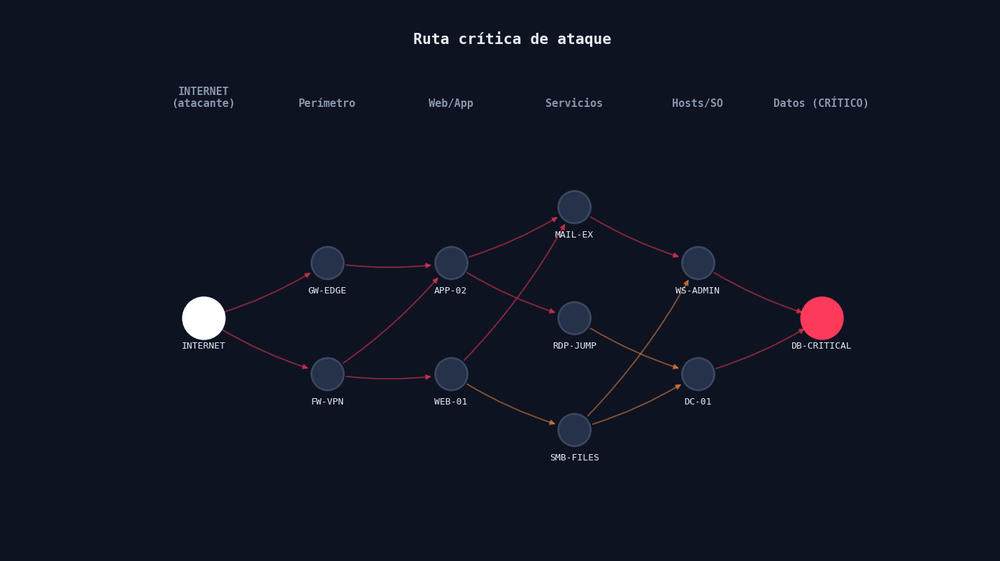

La ruta se traza salto a salto · cada arista muestra el CVE explotado
5 saltos desde Internet hasta la base de datos crítica — todos vía CVEs CRITICAL (CVSS ≥ 9.8), el camino de mínima resistencia.
1INTERNET → FW-VPNCVE-2023-27997w 0.2
2FW-VPN → APP-02Log4Shellw 0.1
3APP-02 → MAIL-EXBlueKeepw 0.2
4MAIL-EX → WS-ADMINBlueKeepw 0.2
5WS-ADMIN → DB-CRITICALCVE-2019-10149w 0.2
Resistencia total (Σ w)0.90